9.1.5 ...的安装 接口 模块 [ApeosPro C810G, Apeos C8180G] 
[Apeos C8180G]
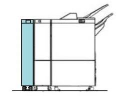
(图 1) ifm910001
[ApeosPro C810G]
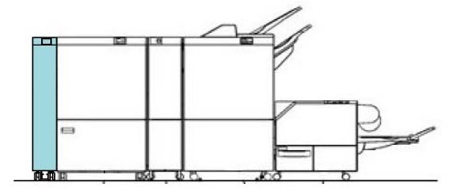
(图 2) ifm910019

设置 安全注意事项 bar to prevent toppling.
产品代码
接口 模块 : QC100232 [ApeosPro C810G, Apeos C8180G]
装订器 出纸 Kit: EC104428 [ApeosPro C810G] (强制 当...时 装订器 已连接)
安装步骤
打开 the package 和 检查 bundled/separate order items.
随附物品 (图 3)
编号
名称
数量
1
Earth 板
2
2
对接 板
1
3
螺钉(M4x8)
4
4
螺钉 (用于 ...的安装 对接 板 (M4x16))
2
5
卡纸 措施 Label
1
6
Label3
1
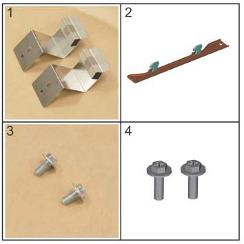
(图 3) ifm910002
关闭IOT主机和打印服务器, 拔掉电源.

用于 如何 to 关闭电源, 请参阅 the 维修 手册 用于 IOT 和 打印服务器.
设置 Bar 用于 topple prevention. (图 4)
松开螺钉 (x2).
设置 Bar 和 拧紧螺钉 (x2).
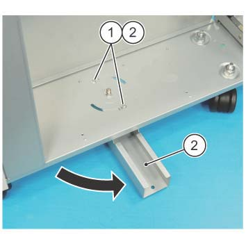
(图 4) ifm910003
拆卸 packaging tape.
打开 the 前面 传输 盖板 和 拆卸 securing ribbon 和 tape of 滑槽.
拆卸 IFM Trans 后面 下方 盖板. (图 5)
拆卸螺钉（x4）.
拆卸 Trans 后面 下方 盖板.
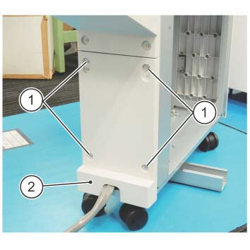
(图 5) fm910004
Paste the 卡纸 措施 Label 在...上 IFM. (图 6)
Paste the 卡纸 措施 Label 在...上 RPM 按照 the guideline of 框架.
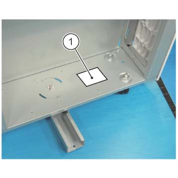
(图 6) ifm910005
安装 gasket 板 到 IFM. (图 7)
安装 gasket 板 (x2).
固定 it by using 螺钉 (M4x8: x2) provided in the bundle.
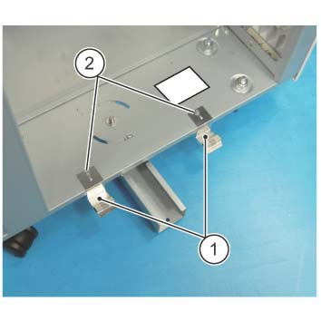
(图 7) ifm910006
用于 [ApeosProp C810G], 安装 装订器 出纸 Kit to IOT 和/与 以下步骤. 用于 其他, go to 步骤 15.
拆卸 RH 盖板.
Slightly 拉出 the Drawer 单元.
拆卸 出纸 传输 组件. (图 8)
断开连接器.
释放 线束 从 卡箍.
拆卸螺钉（x2）.
拆卸 by sliding 到 前面.
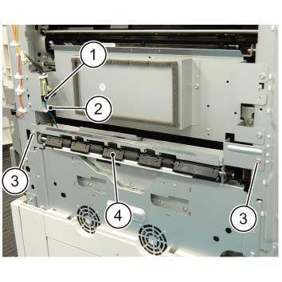
(图 8) fgc910032
安装 出纸 传输 组件 从 the kit to IOT.
安装 出纸 盖板 provided in the Kit. (图 9)
安装 出纸 盖板.
拧紧螺钉 (x2).
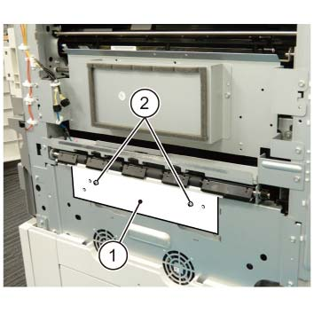
(图 9) fgc910033
安装 对接 板 to IOT. (图 10)
安装 对接 板.
固定 the 对接 板 by using 螺钉 (M4x16: x2).
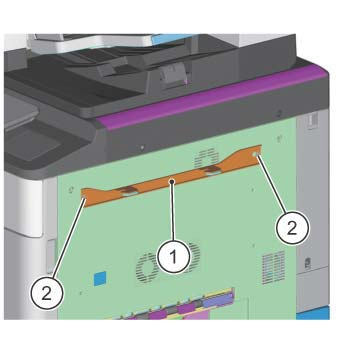
(图 10) ifm910007
Temporarily 拆卸螺钉 该 secures the Latch Stopper 的 接口 模块. (图 11)
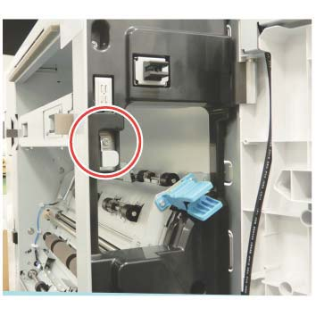
(图 11) ifm910008
Paste Label 3 向右 盖板 组件. (图 12)

(图 12) ifm910009
对齐 hooks 的 上游 模块 对接 板 到 对接 slots 的 接口 模块 和 push it in 直到 they 锁定. (图 13)
Visually 确认 the gasket 的 Earth 板 seals properly 和/与 编号 gap.
If 那里 is 任何 gap in the Earth 板 和 it 不 seal properly, or 如果 hooks of IOT 对接 板 请勿 match the 高度 的 对接 slots 的 IFM, 执行 步骤 19 to 调整 高度 的 IFM Caster.
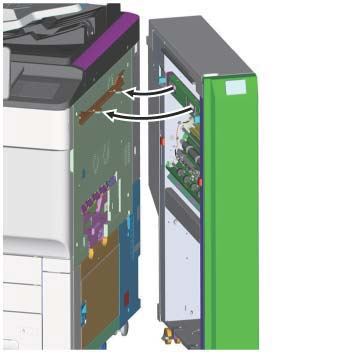
(图 13) ifm910010
Use the provided wrench to 调整 高度 的 接口 模块 Caster as 所需的.
拆卸 wrench 该 安装到 装订器. (图 14)

(图 14) ifm910011
前面 Caster. (图 15)
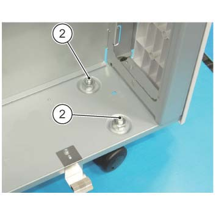
(图 15) ifm910012
后面 Caster. (图 16)
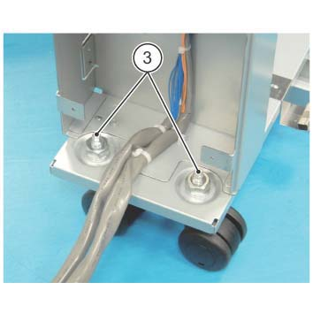
(图 16) ifm910013
Use the wrench to 松开 the Securing 螺母. (图 17)
Use the wrench to 转动 hexagonal 螺栓 和 调整 高度. (图 17)
如果 is difficult to work 使用 provided wrench, use the ratchet wrench.
Use the wrench to 拧紧 the Securing 螺母. (图 17)
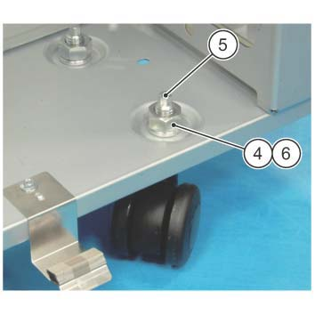
(图 17) ifm910014
固定 the Latch Stopper by using 螺钉. (图 18)
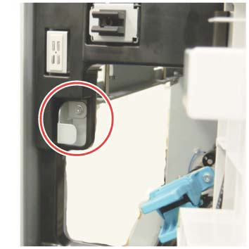
(图 18) ifm910015
连接 接口 模块 连接器 到 subsequent 模块. (图 19)
断开 Cheat 连接器 和 store it.
连接连接器（x2） to P8067, P8066.
固定 the 导线 by using the Snap Hook (x2).
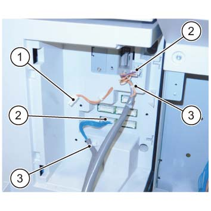
(图 19) ifm910016
Reinstall the Trans 后面 下方 盖板 该 已 removed in 步骤 6.
打开 IOT.
检查 操作 的 接口 模块.
检查 状态 of 纸张 传输, 用于 异常 噪音, 和 等.
确认 纸张 不 get 卡住的, torn, contaminated, folded, or creased.
[在...期间 长 纸张 support]: If 错误 occurs, 执行 Steps 25 to 28.
[在...期间 长 纸张 support]: 关闭 IOT 电源.
[在...期间 长 纸张 support]: 释放 对接.
[在...期间 长 纸张 support]: 调整 对接 调整 板. (图 18)
松开螺钉 在后面.
拆卸螺钉 在前面, 和 reposition it 到 长 hole.
调整 对接 调整 板.
纸张 不对齐 方向
移动 方向 of 调整 板
前面 方向
前面 方向 (a)
后面 方向
后面 方向 (b)
固定 the 螺钉（x2）.

(图 20) ff910046
[在...期间 长 纸张 support]: Dock 再次 和 repeat 从 步骤 23.